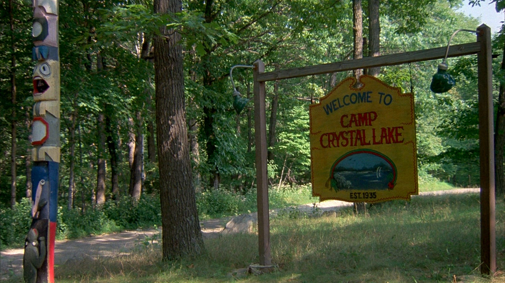
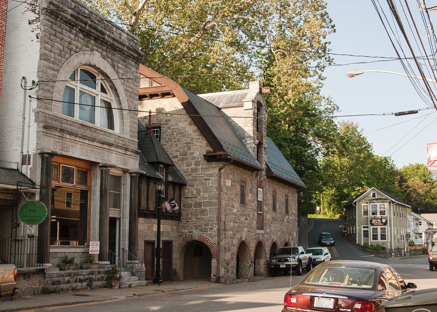

Friday the 13th’s use of New Jersey camping grounds added the perfect amount of isolation

Friday the 13th (1980)
Written by Nica Pierce
When summer camp counselors meet a mysterious murderer, Friday the 13th is born. The film, which came out in 1980 was one of the first big slasher films in the horror genre. Many rave about it being a staple horror movie to watch for a good scare, but what about it makes it so scary? I’m here to argue that the setting of the fictional “Camp Crystal Lake” is what serves the movie in the best way.
Camp Crystal Lake, a real-life Boy Scout camp in New Jersey, transforms into a terrifying location for six unsuspecting camp counselors and the owner of the camping grounds. The main sense of horror that the setting does is create a sense of isolation and unease that fuels the horror. Over the course of the film, one by one a camp counselor gets picked off, dying in gruesome and gorey ways. A storm casts over the camp at night and the weather plus the time of day adds to the isolating presence that is brought forth by an empty camping ground. A few of the counselors go out and search for each other and that leads to some of their demises.
Furthermore, the camp's history of tragedy adds to the film's suspense and chilling atmosphere. Before the start of the film, it is established that a child named Jason drowned in the lake at the camp because the camp counselors were irresponsible, not paying attention to the kids they had to watch. There are references throughout the film that point to the camp feeling haunted by the death of the child. Additionally, seeing the perspective of the killer going around murdering people layers another supernatural element surrounding the camp, making the watcher feel disembodied. As the killer navigates around the camp, seemingly familiar with the landscape, you can tell that they are using the forestry area to their advantage. They are ducking behind trees and the foliage obstructs their frame as they stalk their prey. Adding to this terrifying scenario, every pile of leaves that rustled and every branch that broke under the feet of the killer spiked the adrenaline of the stalkee.
Ultimately, the setting of a lakeside summer camp in New Jersey was the perfect place for the Friday the 13th movie in the 1980s. The isolating environment coupled with the variance in topography pushed a scary slasher film that still causes fear today. It added to the narrative in a way that other settings might not have, and the idea of a killer picking off your coworkers one by one in a place where you can’t call for help because phone signals are down and there is no civilization for miles is terrifying.
Friday the 13th is available to purchase here as a DVD. To watch via streaming, access it through Pluto TV.
Warren County New Jersey: Its highlights, lowlights, and overall atmosphere

Written by Kirsty Cotton
I’ve lived in New Jersey all my life (for the past twenty-one years). Specifically, in Northern New Jersey. Little did I know about the vast variation within the state. From the Jersey Shore with long boardwalks and beaches to the farmlands in Northwest New Jersey, there is a lot of topographical variation.
Warren County, New Jersey, is a hidden gem tucked away in the far northwest corner of the state. As someone who has spent their entire life in Northern New Jersey, I can say that this area offers a stark contrast to the more bustling and urbanized parts of the state. With its lush green landscapes, scenic hills, and quaint small towns, Warren County feels like a retreat from the hustle and bustle of city life.
One of the most notable aspects of Warren County is its natural beauty. The county is home to numerous parks, forests, and nature reserves, making it a haven for outdoor enthusiasts. Although a lot of it is across the state line into Pennsylvania, the Delaware Water Gap National Recreation Area is one of the highlights, offering miles of hiking trails, breathtaking views of the Delaware River, and abundant wildlife. If you're into outdoor activities like hiking, kayaking, or fishing, Warren County provides plenty of opportunities to explore and connect with nature.
The historic town of Phillipsburg is another highlight, with its charming downtown and the popular Delaware River Railroad Excursions offering scenic train rides through the picturesque landscape. For history buffs, Warren County has a rich past, with historic landmarks and museums scattered throughout the region. The area also boasts small local farms, wineries, and orchards, providing visitors with a taste of local agriculture and artisanal goods. These small towns within Warren County are popular destinations for filming movies, as the architecture can add a special touch to the background of a film.
While Warren County is full of natural beauty, it can feel isolated for those used to the conveniences and amenities of urban life. The county is more rural, so it might lack the diversity of restaurants, shops, and entertainment options that larger cities in New Jersey offer. The public transportation system is also not as robust as in other parts of the state, which can make getting around challenging without a car. Additionally, for younger people, the lack of nightlife and cultural events can make the area feel a bit sleepy.
Warren County also faces the same challenges that many rural areas experience, such as limited job opportunities in certain fields. While there is some growth in sectors like agriculture and tourism, there’s still a reliance on nearby cities for many employment opportunities. The county’s economic development has been slow compared to other areas in Northern New Jersey, which means that some towns feel stagnant and underdeveloped.
Warren County is perfect for those who love a rural lifestyle without straying too far from the amenities and services found in nearby cities. It offers a unique blend of scenic landscapes, history, and small-town charm, making it a perfect escape for anyone looking to experience a different side of New Jersey.